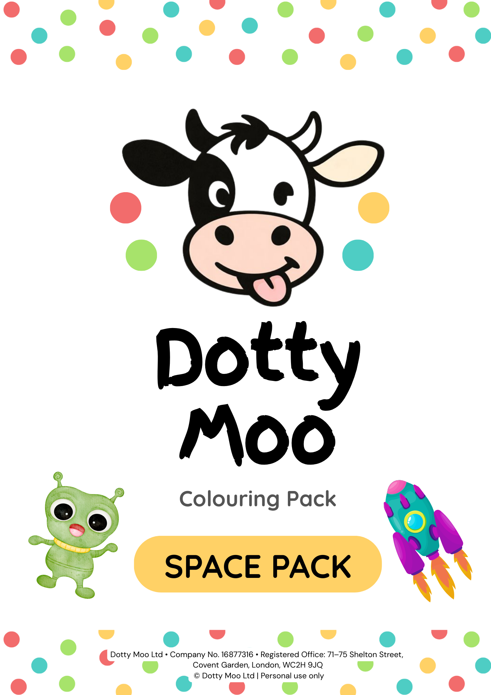
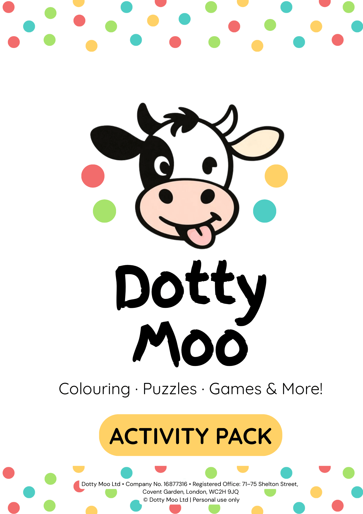

We use cookies to improve your experience and to understand how this website is used.
You can accept all cookies, reject non essential cookies, or manage your preferences.
See our Privacy Policy for more information.
Cookie preferences
You can choose which types of cookies you are happy for us to use. Essential cookies are always on.
Essential cookies
These cookies are needed for the website to function correctly and cannot be switched off in our systems.
Analytics cookies
These help us understand how visitors use the website so we can improve content and layout.
They are set only if you accept them.
Marketing cookies
These may be used to show relevant adverts or track the effectiveness of campaigns.
They are set only if you accept them.
Short, practical articles for parents and schools, with calm activities, gentle support,
and simple ideas to help children both at home and in UK schools.
Looking for Dotty Moo resources?
You can browse all printable packs and personalised items in the Dotty Moo shop.
A gentle look at why teddy bears continue to offer comfort, imagination and familiarity to children across generations.
There are many toys that come and go. Trends change, characters fade, and gadgets are quickly replaced by the next new thing. Yet one toy has quietly remained at the heart of childhood for generations: the teddy bear.
From nursery shelves to school bags, bedtime routines to big life moments, bears have a unique way of staying with children as they grow.
A familiar source of comfort
Teddy bears are often one of the first toys a child truly connects with. Soft, friendly and reassuring, they offer comfort in a way few other toys can.
For many children, a bear becomes a constant companion during times of change. Starting nursery, beginning school, visiting unfamiliar places, or navigating big feelings. Bears do not rush or judge. They simply stay.
Imagination without limits
Unlike toys that come with rules, screens or fixed storylines, teddy bears invite open-ended play.
One day a bear might be a brave explorer. Another day, a teacher, a patient, or a quiet listener at bedtime. Children decide who their bear is and what role it plays.
This kind of imaginative play supports storytelling, confidence and emotional development, helping children explore the world in a way that feels safe and familiar.
A bridge between home and school
For younger children especially, teddy bears can act as a gentle link between home and school.
Bringing a familiar bear into a new environment can help ease separation anxiety and support children as they settle into new routines. It is a small piece of home that travels with them.
In school settings, bears are often used to support reading, wellbeing activities and calm classroom spaces, helping children feel secure and included.
Memories that last
Many adults can still remember their childhood bear in detail. The name, the worn fur, or the small repairs that tell a story of years of love.
Teddy bears are rarely just toys. They become part of family memories, often kept long after they are played with daily, quietly holding moments of comfort and care.
Why bears still matter
In a world filled with fast-paced entertainment and changing trends, the teddy bear remains reassuringly simple.
It does not need charging, updating or replacing. It offers connection, comfort and creativity in a way that feels timeless.
At Dotty Moo, our love for bears comes from this very idea. Bears are not just toys. They are quiet companions that support comfort, confidence and connection, whether at home or as part of a wider school community.
Sometimes, the simplest things really do mean the most.
How Small Gestures Can Make a Big Difference to Schools
Why thoughtful, low-pressure support from families and communities can have a meaningful impact on schools and the children they serve.
Schools do an incredible amount with limited time and resources. Alongside teaching and learning, they support wellbeing, community, enrichment activities and those small extras that help children feel settled and included.
Supporting schools is not always about large campaigns or complex initiatives. Often, it is the quieter, more thoughtful gestures that have the greatest impact.
The value of small, thoughtful support
Small contributions, whether of time, resources or goodwill, can help schools enhance everyday experiences for children. This might be adding something new to a reading space, supporting creative activities, or contributing towards shared resources that children use together.
These gestures may seem modest, but they are often the ones children notice most. They show care, connection and community support without adding pressure.
Community involvement, without pressure
Many families want to feel connected to their child’s school, but not every family has the time or capacity to take part in traditional fundraising or organised events.
Gentle, community-led opportunities allow families to support schools in ways that feel manageable and optional. There is no expectation to take part, no obligation placed on schools, and no need for additional administration.
At their best, these moments are about shared goodwill rather than outcomes or targets.
Building connection beyond resources
Support for schools is not only about funding or materials. Children also benefit from shared symbols that help them feel they belong.
School mascot bears are one example of this. They are familiar, recognisable and often woven into school life through assemblies, reading time or celebrations. For children, a school mascot is about identity and comfort, not transactions or fundraising.
When a child talks about their school mascot at home, it naturally strengthens the connection between school and family life.
Keeping things calm and respectful
At Dotty Moo, we believe schools should always feel comfortable and in control. Any involvement with families should be clear, optional and handled with care.
Our focus is on supporting schools in ways that feel calm, respectful and manageable, whether that is through a mascot bear that becomes part of school routines or through wider community activity that families may choose to engage with independently.
A gentle way to support school communities
Not every form of support needs to be visible or complex to be meaningful. Sometimes it is the combination of small gestures and strong community connection that makes the biggest difference.
When schools and families are supported in ways that feel thoughtful and pressure-free, everyone benefits, especially the children at the heart of it all.
Dotty Moo Gets Ready for School: Supporting Calm Mornings Through Predictable Routines
How a gentle social story can support calmer, more predictable school mornings by helping children understand routines, sensory challenges, and what to expect.
Mornings can feel overwhelming for some children. Getting dressed, brushing teeth, leaving the house,
and arriving at school can all bring sensory discomfort, worry, or big emotions before the day has even begun.
For children who find transitions tricky, mornings are not just busy. They can feel unpredictable,
uncomfortable, and emotionally demanding.
Dotty Moo Gets Ready for School was created as a calm social story to gently support children
through these moments, helping them understand what happens in the morning and how they can feel safer
and more settled as the routine unfolds.
Why mornings can feel so hard
Many children experience heightened sensory sensitivity in the morning. Clothes can feel scratchy,
toothpaste can feel overwhelming, and shoes might suddenly feel “wrong”. These sensations are very real
to the child, even if they seem small to adults.
Alongside sensory challenges, children may also feel anxious about leaving home, separating from familiar
adults, or facing the demands of school. When several of these factors come together, mornings can quickly
become stressful for both children and parents.
The power of predictable routines
One of the key ideas in the story is predictability. Visual routines and clear sequences help children
understand what is coming next, reducing the feeling that mornings are “too big” or out of control.
By showing Dotty Moo following a simple morning routine, the story reinforces that each step will end,
there is a clear order to the morning, and support is available if something feels difficult.
Sensory support without pressure
The story gently models common sensory supports, such as choosing more comfortable clothes, using
non-foaming toothpaste, soft face cloths, and calm pacing from adults.
These supports are shown as options rather than rules. This mirrors real life. Not every strategy works
for every child, and what helps one day may change the next.
Calm adults make a difference
Throughout the story, adults are shown staying calm, responsive, and supportive. Children often borrow
regulation from the adults around them, especially when they feel overwhelmed.
Calm voices, reassurance, and gentle help can make a significant difference during challenging moments.
The story supports adults as much as children by modelling this approach.
Using the story at home
This social story is designed to be read when the child is calm, not during a moment of distress.
Many families find it helpful to read the story regularly, revisit specific pages, or personalise
elements to match their child’s routine.
Over time, the familiar wording and images can become reassuring in themselves, helping mornings feel
more manageable.
Some families choose to use printable social stories to support routines at home.
Dotty Moo Gets Ready for School is available via the Dotty Moo shop if you would like to explore it alongside other calm support resources
Visit the Dotty Moo shop
.
Supporting Emotional Awareness Through Simple Activities
Gentle, low-pressure ways to help children recognise and talk about feelings through simple, calm activities.
Understanding and talking about feelings can be challenging for many children. Emotional awareness develops gradually, and for some children it needs to be supported in a very concrete, visual way.
Simple activities can provide a safe starting point for exploring emotions without putting children on the spot. Colouring, matching, and gentle prompts allow children to engage with feelings at a distance, which can feel much more manageable than direct questioning.
Activities focused on emotions can help children recognise and name common feelings, build emotional vocabulary, and understand that all emotions are valid. Over time, this can support calmer communication and better self-understanding.
It is important that resources exploring emotions feel calm rather than overwhelming. Clear visuals, minimal wording, and familiar formats often work best, especially for children who benefit from predictability and low sensory load.
If you would like an optional printable to support this at home, the Emotions and Feelings Pack is available via the Dotty Moo shop.
Visit the Dotty Moo shop
View the Emotions and Feelings Pack
.
Space-Themed Colouring as a Calm and Creative Outlet
Why simple space-themed colouring pages can support calm focus, creativity, and screen-free downtime.
Colouring is often thought of as a creative activity, but for many children it can also support calm focus. The repetitive motion of colouring can help children slow down, settle, and stay with one task for longer.
Space themes are particularly popular because they feel imaginative without being emotionally demanding. Planets, stars, rockets, and astronauts offer enough interest to hold attention while still allowing children to work at their own pace.
Black-and-white colouring pages can be especially helpful for children who prefer clear outlines, feel overwhelmed by busy designs, or benefit from predictable, low-pressure activities.
Colouring does not need to be about staying in the lines or finishing quickly. For many children, it is about the process. Space colouring can also spark quiet conversation, storytelling, or independent play, depending on the child.
If you would like an optional printable for calm, screen-free colouring time, the Space-Themed Colouring Pack is available via the Dotty Moo shop.
Visit the Dotty Moo shop
View the Space-Themed Colouring Pack
.

Calm, Screen-Free Activities for Quiet Moments at Home
Simple, low-prep activity ideas that help children wind down at home, especially after school and during holidays.
Finding calm moments at home can feel surprisingly difficult, especially during busy weeks, school holidays, or transitions between activities. Many families are trying to reduce screen time, but still need something that feels engaging and genuinely calming.
Screen-free activities do not need to be complicated. Often, children benefit from simple, predictable tasks that allow them to focus without pressure. Colouring, tracing, matching, and gentle mark-making activities can support concentration while giving children a sense of completion and control.
For some children, busy or overly detailed activities can feel overwhelming. Calm activity packs that use clear layouts, minimal clutter, and plenty of white space can help children settle more easily.
These kinds of activities are often useful after school, during quiet time, on rainy days, and throughout school holidays. They can also support routines by giving children something familiar to return to.
If you would like an optional printable for calm, screen-free fun, the Dotty Moo Activity Pack is available via the Dotty Moo shop.
Visit the Dotty Moo shop
View the Dotty Moo Activity Pack
.

Choosing Personalised Gifts for Children Leaving or Starting School
A simple guide to choosing thoughtful, practical personalised gifts that mark school transitions positively.
Transitions are important milestones. A personalised gift helps mark the moment in a positive way, especially when pupils are leaving a familiar setting or joining a new one.
Many schools like to choose something that feels thoughtful but is also practical to organise.
Mascot bears naturally fit into a child’s bedroom and can move with them as they grow.
For younger pupils, they can offer comfort at bedtime or during periods of change. For older pupils, they often become a reminder of favourite teachers, friends, and events.
When selecting a gift, schools often look for items that can carry the school logo, are suitable for all pupils, and do not create extra workload for staff.
Bears, notebooks, mugs, and hoodies are all popular options, but soft toys are usually the easiest to distribute and store.
Personalised with the school logo and colours, a bear becomes a symbol of memories, friendships, and routines.
Families appreciate a gift that has clearly been chosen with care, and pupils are more likely to keep something that feels personal to their time at school.
Whether used for leavers, new starters, or special groups such as pupil leaders, personalised mascot bears offer a simple, consistent way to celebrate pupils’ journeys through school.
How Schools Use Mascot Bears to Build Community Spirit
Practical, real-world ways schools use mascot bears in routines, celebrations, and milestones to build belonging.
Mascot bears can play a real role in helping pupils feel connected to school life. Some schools create a named character that appears in displays, certificates, and newsletters.
Others use bears more quietly, as part of class routines or milestone events.
In assemblies and classroom routines, a class may take turns looking after an “attendance bear” or “values bear” when a goal is met.
The bear might sit on the table of the week, go home with a pupil who has tried especially hard, or appear in photos when the class achieves something together.
Bears are also used to mark milestones such as new pupils joining or pupils moving on to their next setting.
A welcome bear can help a child feel part of the group from day one, while a leavers’ bear can acknowledge the contribution they have made over time.
Some schools include their mascot bear on flyers, posters, or social media posts to give communication a friendly and familiar face.
When pupils see the same bear on displays, certificates, and keepsakes, it reinforces the idea that they belong to something bigger than one class or year group.
However schools choose to use them, mascot bears work best when they are woven into everyday life, not just handed out once and forgotten.
A simple soft toy can help build community spirit when it is linked to shared routines, celebrations, and values.
10 Reasons School Mascot Bears Make the Perfect Keepsake
Ten simple reasons why schools and families love mascot bears as meaningful keepsakes for leavers and new starters.
Many families like to keep something special from their child’s time at primary or first school.
A school mascot bear is a simple way to capture those memories in a form that pupils can see and touch every day.
Printed with the school logo and colours, a mascot bear quickly becomes a reminder of sports days, nativity plays,
favourite teachers, and friendship groups. Below are ten reasons schools choose mascot bears as a keepsake for leavers or new starters.
Personal to the school. The bear carries the school logo and colours, so it feels unique to that community rather than a generic toy.
A daily reminder. Pupils can keep the bear on a bed or shelf, so memories of their time at school stay close.
Perfect for leavers. A bear is an easy way to mark the end of Year 6 or Year 4 in first schools, particularly alongside yearbooks or certificates.
Reassuring for new starters. For younger pupils joining Reception or Year 1, a bear can offer comfort at bedtime or during big transitions.
Durable and long lasting. Quality mascot bears are designed to be hugged, squashed into bags, and still look good years later.
Easy to hand out. Bears can be distributed in assemblies, class parties, or leavers’ events without extra wrapping or packaging.
Supports school identity. Having the same bear across a year group reinforces a sense of belonging and pride in the school.
Works with photos and displays. Bears look great in leavers’ photos, classroom displays, or social media posts celebrating milestones.
Simple for families. Parents and carers do not need to hunt for gifts; they can order directly through school with everything organised for them.
A keepsake pupils actually keep. Many families already have plenty of keyrings and mugs. A soft toy is something most children will keep for years.
When schools choose a mascot bear, they are choosing more than a toy. They are giving each pupil a small but meaningful reminder of their primary or first school years.